penguins <- palmerpenguins::penguins |>
dplyr::rename(
bill_len = bill_length_mm,
bill_dep = bill_depth_mm,
flipper_len = flipper_length_mm,
body_mass = body_mass_g
)
penguins
#> # A tibble: 344 × 8
#> species island bill_len bill_dep flipper_len body_mass sex year
#> <fct> <fct> <dbl> <dbl> <int> <int> <fct> <int>
#> 1 Adelie Torgersen 39.1 18.7 181 3750 male 2007
#> 2 Adelie Torgersen 39.5 17.4 186 3800 female 2007
#> 3 Adelie Torgersen 40.3 18 195 3250 female 2007
#> 4 Adelie Torgersen NA NA NA NA <NA> 2007
#> 5 Adelie Torgersen 36.7 19.3 193 3450 female 2007
#> 6 Adelie Torgersen 39.3 20.6 190 3650 male 2007
#> # ℹ 338 more rows6 Grafiken in R
Die Datenvisualisierung ist ein zentraler Bestandteil der Datenanalyse, da sie es ermöglicht, Muster, Zusammenhänge und Ausreißer in Daten schnell und intuitiv zu erkennen. Eine gute Visualisierung hilft somit dabei, einen ersten Eindruck über die Daten zu bekommen. Außerdem können wir mit Grafiken die Ergebnisse fortgeschrittener Analysen (etwa Effekte in unterschiedlichen Regressionsmodellen) zusammenfassen und besser kommunizieren.
In diesem Kapitel werden wir ausschließlich mit der Visualisierung von Datensätzen auseinandersetzen. Wie in Kapitel 3 nutzen wir dafür den Palmer Penguins-Datensatz, der über das Package palmerpenguins frei verfügbar ist:
6.1 ggplot2
Zur Datenvisualisierung verwenden wir das ggplot2 Package, das Teil von tidyverse ist. In diesem Kapitel lernen wir den ggplot-Grammatik sowie wichtigsten Funktionen kennen. Für eine ausführliche Einführung siehe ggplot2: Elegant Graphics for Data Analysis. Solltest du das tidyverse noch nicht geladen haben, lade es mit:
6.2 Grundlagen: ggplot-Grammatik

Abbildung 6.1 fasst das Fundament der Grammatik in ggplot2 zusammen. Die wichtigsten Layers sind dabei die drei untersten:
-
Data: Legt den Datensatz fest, der für die Visualisierung verwendet wird (
data = ...). -
Mapping: Bestimmt, wie die Daten in ästhetische Charakteristiken übersetzt werden. Hier werden etwa x- und y-Achse definiert, aber wenn gewünscht auch Farbe, Größe, etc. (
mapping = aes(...)). -
Geometries: Definieren die geometrischen Objekte (z. B. Punkte, Linien, Balken), mit denen die Daten dargestellt werden (
geom_*(...)).
Abhängig von der gewünschten Visualisierung kann man folgende Aspekte über die weiteren Layers definieren:
-
Statistics: Führen statistische Transformationen durch, z. B. das Berechnen von Mittelwerten oder Dichten, bevor die Daten geplottet werden (
stat_*()). Oft werden die zugrundeliegenden Transformationen aber bereits indirekt im Geometries-Element durchgeführt. -
Scales: Steuern, wie Datenwerte visuell umgesetzt werden, etwa durch Achsenskalierung, Farben oder Legenden (
scale_*()). -
Coordinates: Bestimmen das Koordinatensystem des Plots, z. B. kartesisch oder polar (
coord_*()). -
Facets: Teilen den Datensatz in Teilmengen auf und erstellen für jede davon einen eigenen Plot innerhalb einer Grafik (
facet_*()). -
Theme: Kontrolliert das Aussehen der Grafik, etwa Schriftarten, Hintergrund, Gitterlinien und Layout (
theme()).
6.3 Data-Layer
Um eine ggplot-Grafik (Plot) zu erstellen, verwenden wir die Funktion ggplot(). Mit dem Argument data = ... spezifizieren wir den Datensatz, den wir verwenden:
ggplot(data = penguins)Da ggplot() nur durch die Nennung des Datensatzes nicht weiß, welche Variablen aus dem penguins-Dataset wie visualisiert werden, resultiert dies in einem leeren Plot.
6.4 Mapping-Layer
Ebenfalls innerhalb von ggplot() geben wir über das Argument mapping = aes(...) an, wie die Daten in ästhetische Charakteristiken übersetzt werden. Vor allem können wir hier festlegen, welche Daten auf die x- oder y-Achse gemappt werden. Wollen wir uns etwa den Zusammenhang von Schnabellänge (bill_len) und Flügellänge (flipper_len) ansehen:
Sollten andere ästhetische Merkmale ebenfalls von einer bestimmten Variable abhängen, können wir dies ebenfalls in aes() spezifizieren. Diese werden dann vor allem auf den im nächsten Punkt behandelten Geometries-Layer (Geom) übertragen. Wesentliche Optionen sind hierbei:
-
Farbe: Wollen wir etwa die abgebildeten Daten in Abhängigkeit einer Variable einfärben, verwenden wir die Argumente
color = ...(für Punkte/Linien) und/oderfill = ...(für Flächen). -
Größe: Um die Größe des Geoms (etwa eines Punkts in einem Scatterplot) relativ zu einer bestimmten Variable zu machen, verwenden wir
size = .... -
Form: Die Form des Geoms kann über das Argument
shape = ...(für Punkte) oderlinetype = ...(für Linien) relativ zu einer bestimmten Variable dargestellt werden. -
Gruppierung: Bestimmte Geoms können mittels
group = ...in Abhängigkeit einer Variable separat dargestellt werden, ohne die Geoms gesondert einzufärben oder mit einer anderen Form zu versehen. So können wir etwa Zeitreihen von Wirtschaftskennzahlen für unterschiedliche Länder mit separaten Trendlinien abbilden.
Möchten wir also den Zusammenhang von Schnabel- und Flügellänge von Penguinen so darstellen, dass die Geoms in Abhängigkeit der Spezies (species) des Pinguins eine andere Farbe haben:

Da wir noch nicht spezifiziert haben, wie wir die Beobachtungen darstellen wollen, ändern sich hier nur die jeweiligen Achsen des Plots.
Hinweis
aes() und Variablentypen
Bei der Verwendung von weiteren Ästhetik-Argumenten innerhalb von aes() müssen wir beachten, dass der Variablentyp zur Ästhetik passt. Für Form und Gruppierung sollten nur kategoriale Variablen verwendet werden. Machen wir die Größe von einer Variable abhängig, eigenen sich nur metrische Variablen dafür, da kategoriale Variablen hier eine Ordnung unterstellen. Die Farbe wiederum kann relativ zu kategorialen und metrischen Variablen gesetzt werden. Bei kategorialen Variablen wählt ggplot eine diskrete Farbpalette, während bei metrischen Variablen ein Farbverlauf verwendet wird.
6.5 Geometries-Layer
Über den Geometries-Layer spezifizieren wir schlussendlich, wie wir unsere Beobachtungen darstellen möchten. Dafür stehen uns in ggplot unterschiedliche Geoms zur Verfügung. Die wesentlichsten Optionen sind:
-
geom_point()wird für Streudiagramme verwendet und eignet sich besonders, um Zusammenhänge zwischen zwei metrischen Variablen sichtbar zu machen. -
geom_line()verbindet Datenpunkte zu Liniendiagrammen und wird häufig für Zeitreihen oder geordnete Daten genutzt.geom_smooth()erstellt geglättete Trendlinien, etwa über Regressions- oder LOESS-Schätzungen. -
geom_bar()undgeom_colerstellen Balkendiagramme. - Verteilungen können außerdem als Histrogramme (
geom_histogram()), Verteilungskurven (geom_density()), Boxplots (geom_boxplot()) dargestellt werden.
Im Gegensatz zum Data- und Mapping-Layer definieren wir das Geom nicht mehr innerhalb von ggplot(), sondern als neue Funktion in Verbindung mit ggplot(). Die Verbindung folgt über das +-Zeichen (ggplot(...) + geom_*(...)).
6.5.1 Streudiagramme: geom_point
Streudiagramme werden verwendet, um den Zusammenhang zwischen zwei metrischen Variablen sichtbar zu machen. Sie eignen sich besonders gut, um Muster, Korrelationen oder Ausreißer in den Daten zu erkennen.
Möchten wir den Zusammenhang von Schnabel- und Flügellänge als Streudiagramm darstellen, und dabei die einzelnen Punkte abhängig der Pinguin-Spezies einfärben, so kombinieren wir unseren ggplot()-Befehl aus Kapitel 6.4 mit geom_point():
ggplot(
data = penguins,
mapping = aes(x = bill_len, y = flipper_len, color = species)
) +
geom_point()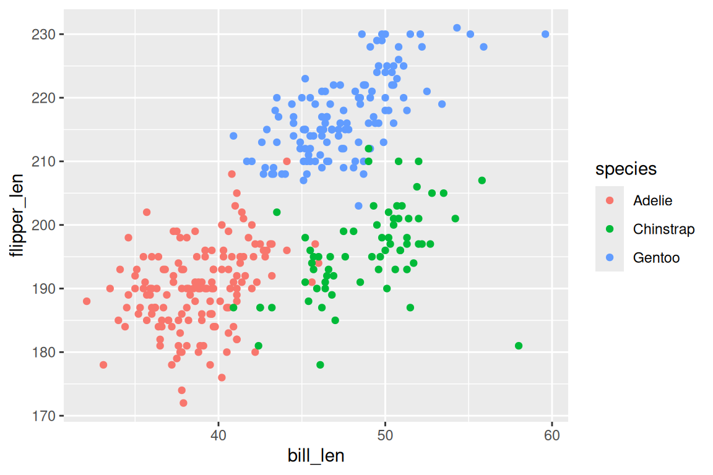
Wir haben nun unsere erste aussagekräftige Grafik dargestellt. Diese zeigt einen positiven Zusammenhang von Schnabel- und Flügellänge bei Pinguinen, wobei deutliche Unterschiede zwischen den Spezien bestehen.
WarnungÄsthetische Argumente inner- und außerhalb von
aes()
Die Einfärbung der Punkte haben wir im Streudiagramm nach Geschlecht vorgenommen. Möchten wir die Punkte einfach nur z.B. blau einfärben, können wir dies ebenfalls über das Argument color = ... definieren. Diese definieren wir dann aber nicht innerhalb von aes(), da dies zu folgendem Problem führt:
ggplot(
data = penguins,
mapping = aes(x = bill_len, y = flipper_len, color = "blue")
) +
geom_point()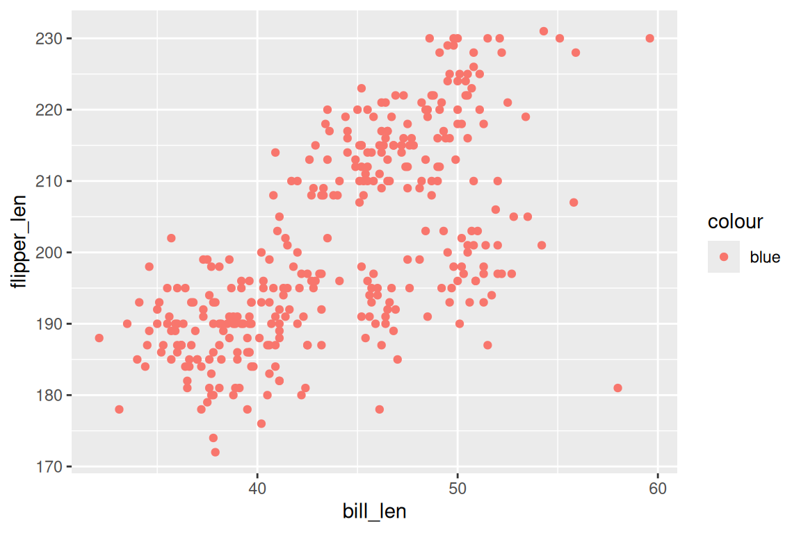
Da ggplot alles innerhalb von aes() als eine Abbildung von Daten auf Ästhetiken interpretiert, liest die Funktion unseren Code als Kategorie mit dem Namen „blue“. Dadurch wird automatisch eine Standard-Farbpalette verwendet, und die Punkte werden (je nach Palette) z. B. rot eingefärbt.
Korrekt spezifizieren wir die Farboption stattdessen außerhalb von aes() und innerhalb des Geoms:
ggplot(
data = penguins,
mapping = aes(x = bill_len, y = flipper_len)
) +
geom_point(color = "blue")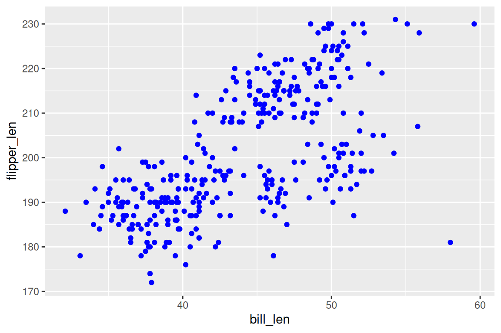
6.5.2 Liniendiagramme und Trends: geom_line, geom_smooth
Liniendiagramme werden verwendet, um Verläufe und Entwicklungen über eine geordnete Dimension hinweg darzustellen, beispielsweise über Zeit. Sie eignen sich besonders gut, um Trends und Veränderungen in metrischen Variablen sichtbar zu machen und mehrere Beobachtungen miteinander zu verbinden.
Um das durchschnittliche Körpergewicht (body_mass) im Zeitverlauf year darzustellen, abhängig von der Spezies der Pinguine, können wir folgenden Code versuchen:
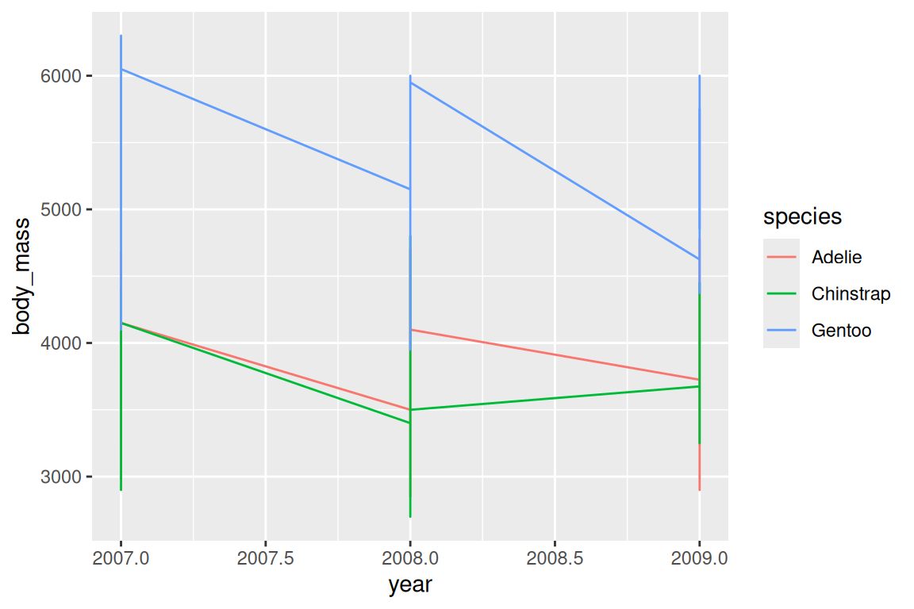
Dies führt jedoch nicht zum gewünschten Resultat, da geom_line() alle Beobachtungspunkte im Datensatz verbindet. Wir müssen also die Daten zuerst so aufbereiten, dass wir die Durschnitte bereits in ggplot() einlesen:
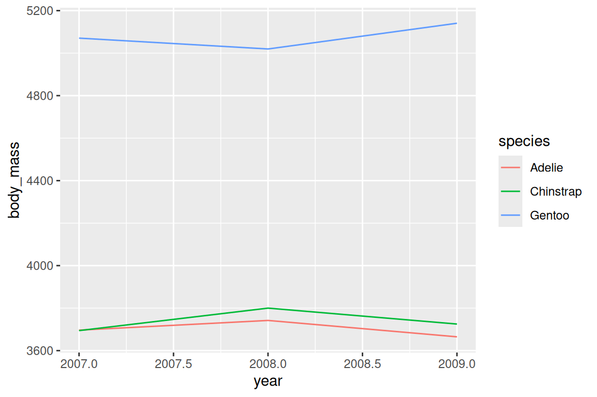
Alternativ können wir die Daten über den Statistics-Layer auch innerhalb von ggplot() zusammenfassen. Dies lernen wir in Kapitel 6.6 näher kennen. Auch sind die Labels der x-Achse nicht ideal, da hier eigentlich nur die Zeitpunkte mit Beobachtungen (ganze Jahre) angeführt werden sollten. Dies können wir im Scales-Layer anpassen (siehe Kapitel 6.7).
Um Trendlinien durch Beobachtungspunkte zulegen, verwenden wir geom_smooth(). Da diese Funktion die Daten bereits selbst transformiert, müssen wir diese hier nicht vorher aufbereiten. Zusätzlich zur Trendlinie wird per Default auch ein Konfidenzintervall angezeigt. In den Optionen von geom_smooth() können wir diese mit se = FALSE ausblenden. Außerdem mit `method = ... können wir aus diversen Methoden zur Trendberechnung (Smoothing) auswählen (siehe Help-Dokumentation der Funktion für mehr Informationen).
Möchten wir etwa die Trends auf Basis eines OLS-Modells berechnen und Konfidenzintervalle inkludieren:
ggplot(
data = penguins,
mapping = aes(x=year, y = body_mass, color = species)
) +
geom_smooth(method = lm, se = TRUE)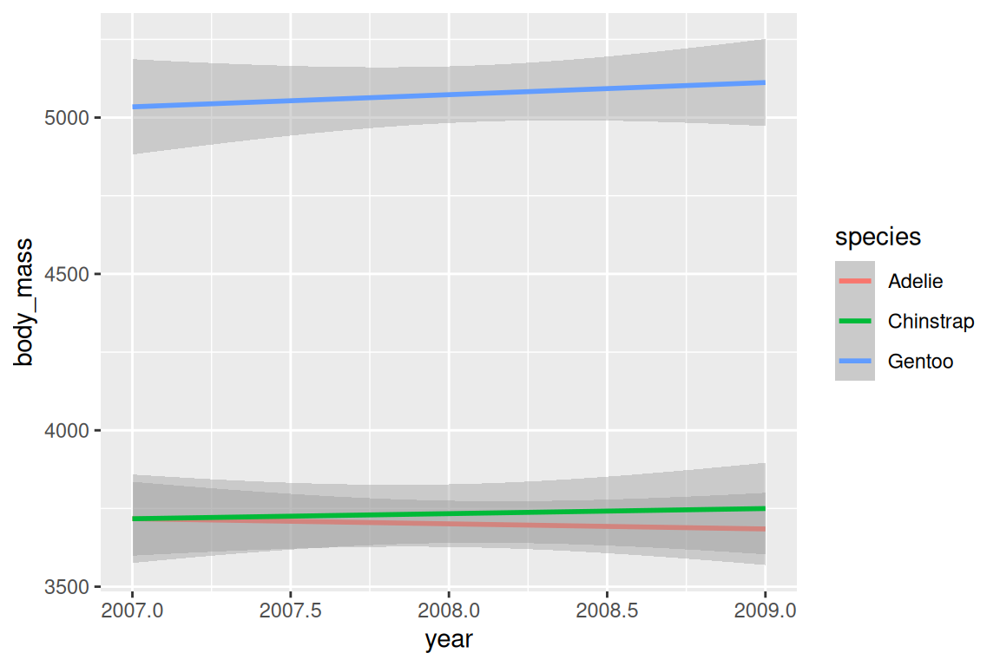
6.5.3 Balkendiagramme: geom_bar, geom_col
Balkendiagramme werden verwendet, um kategoriale Daten zu vergleichen, indem Häufigkeiten oder aggregierte Werte für verschiedene Gruppen dargestellt werden. Sie eignen sich besonders, um Unterschiede zwischen Kategorien übersichtlich sichtbar zu machen.
Um auf Basis unserer Individualdaten die Anzahl der Pinguine pro Spezies in einem Balkendiagramm darzustellen, verwenden wir geom_bar():
Um die Balken horizontal auszurichten, müssen wir im Mapping-Layer die Spezies als Variable für die y-Achse anstelle der x-Achse definieren (y = species anstatt x = species).
Manchmal sind unsere zugrunde liegenden Daten bereits aggregiert. Um Balkendiagramme auf Basis von aggregierten Daten zu erstellen, verwenden wir geom_col():
Tipp
position-Argument in Balkendiagrammen
In einem Balkendiagramm können wir die Balken weiter unterteilen, um mehr Informationen abzubilden. So können wir etwa die Anzahl der Pinguine pro Spezies zusätzlich nach Geschlecht unterteilen, indem wir über das fill = ... Argument in aes() die Balken nach Geschlecht einfärben.
Das Argument position = ... in geom_bar() bestimmt, wie Balken bei gruppierten Daten angeordnet werden, etwa gestapelt (stack, Default), nebeneinander (dodge) oder normiert um prozentuale Anteile darzustellen (fill):
# Links
ggplot(
data = penguins,
mapping = aes(x = species, fill = sex)
) +
geom_bar(position = "stack")
# Mitte
ggplot(
data = penguins,
mapping = aes(x = species, fill = sex)
) +
geom_bar(position = "dodge")
# Rechts
ggplot(
data = penguins,
mapping = aes(x = species, fill = sex)
) +
geom_bar(position = "fill")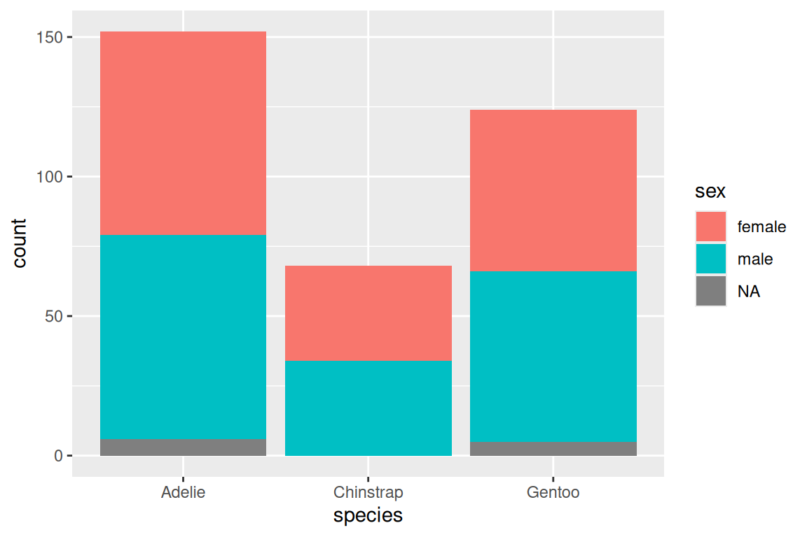
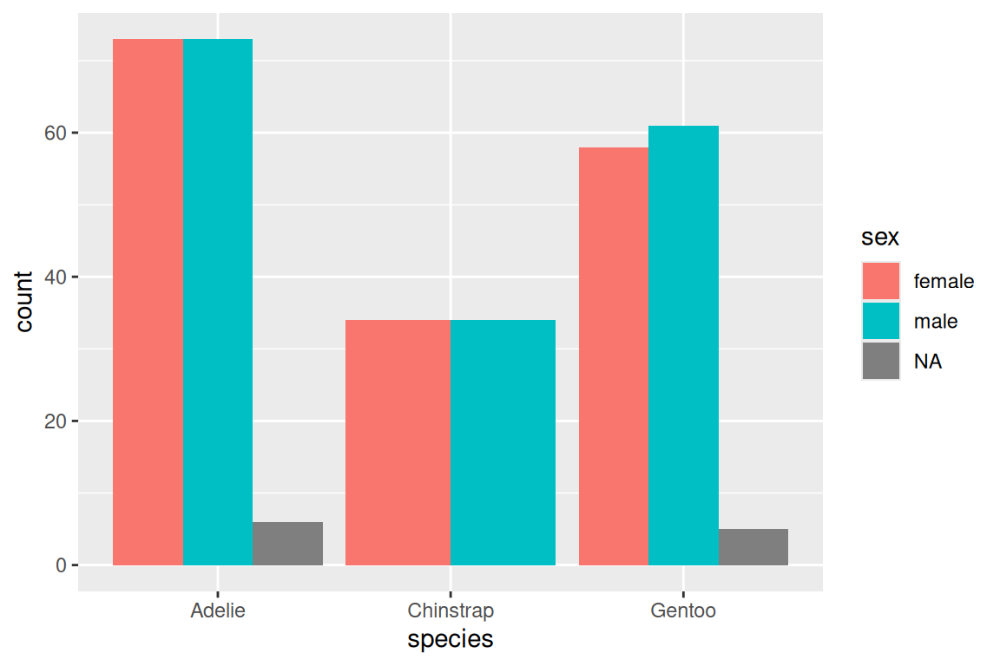
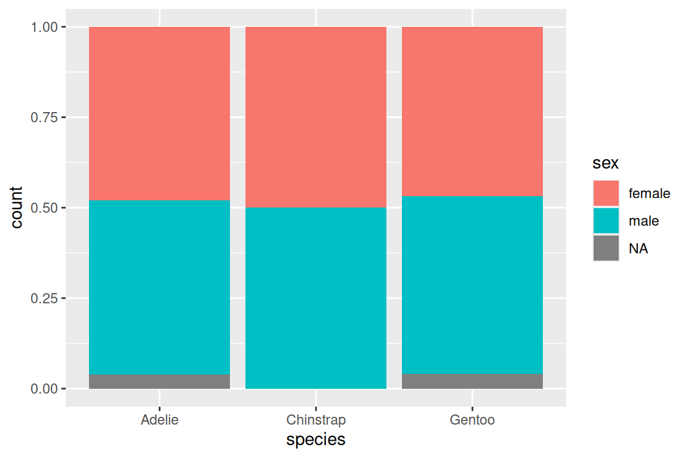
6.5.4 Verteilungen: geom_histogram, geom_density, geom_boxplot
Während Balkendiagramme sich gut dazu eigenen, um die Verteilung einer kategorialen Variable darzustellen, bietet ggplot eine Vielzahl an weiteren Geoms zur Visualierung der Verteilung metrischer Variablen, etwa Histogramme, Density-Plots oder Boxplots.
Möchten wir die Verteilung der Flügellänge im penguins-Datensatz als Histogramm darstellen, verwenden wir geom_histogram():
ggplot(
data = penguins,
mapping = aes(x = flipper_len)
) +
geom_histogram()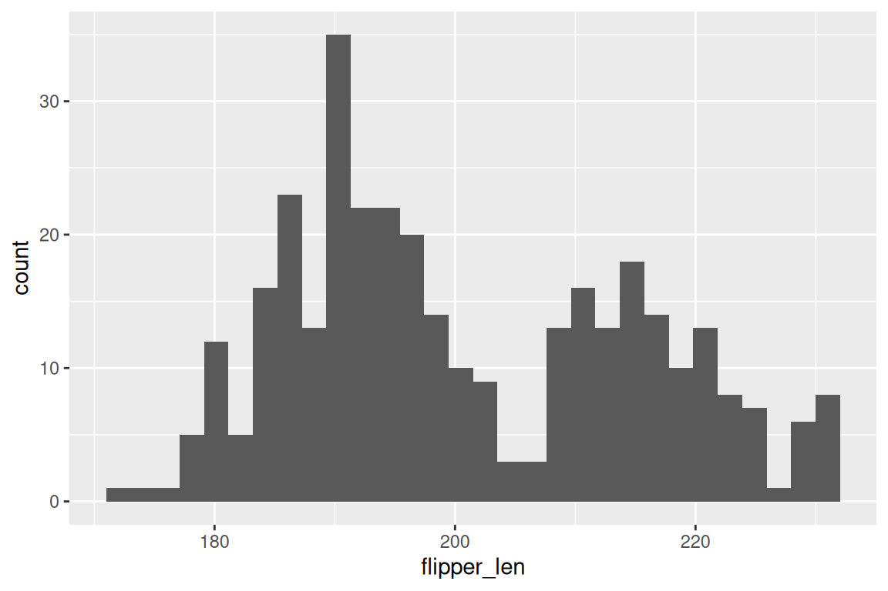
Die Intervallgröße (Bin-Größe) wird von geom_histogram() automatisch gewählt. Diese kann jedoch über Argumente spezifisch gesetzt werden. Über bins = ... können wir eine bestimmte Anzahl an Bins festsetzen, während über binwidth = ... die Größe spezifiziert wird:
# Links
ggplot(
data = penguins,
mapping = aes(x = flipper_len)
) +
geom_histogram(bins = 10)
# Rechts
ggplot(
data = penguins,
mapping = aes(x = flipper_len)
) +
geom_histogram(binwidth = 1)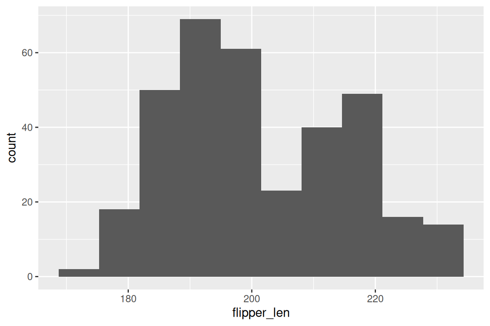
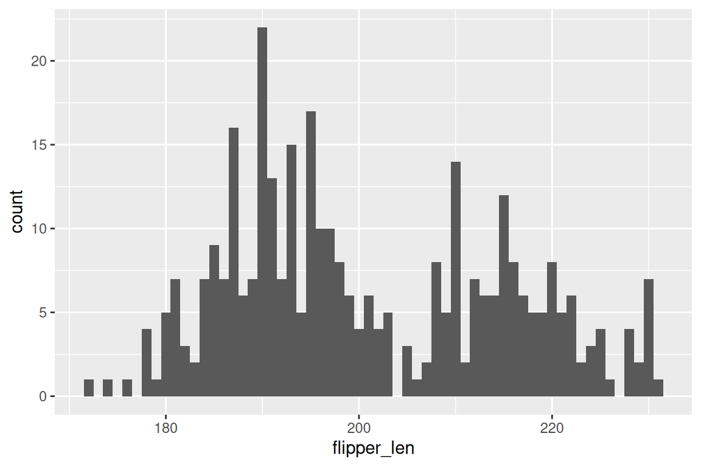
Um Verteilungen zu glätten beziehungsweise keine willkürlichen Entscheidungen bei der Bin-Größe treffen zu müssen, können wir mit geom_density() Verteilungskurven darstellen. Dieses Geom eignet sich außerdem dazu, Verteilungsunterschiede zwischen Gruppen darzustellen (etwa Flügellänge nach Spezies):
# Links
ggplot(
data = penguins,
mapping = aes(x = flipper_len)
) +
geom_density() +
xlim(160, 240)
# Rechts
ggplot(
data = penguins,
mapping = aes(x = flipper_len, color = species, fill = species)
) +
geom_density(alpha = 0.2) +
xlim(160, 240)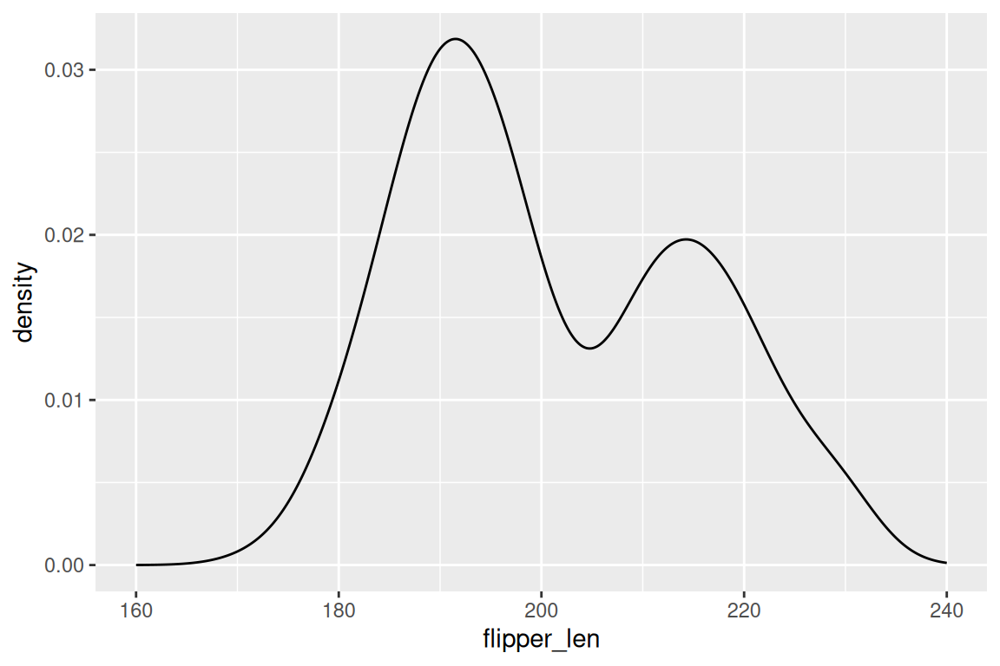
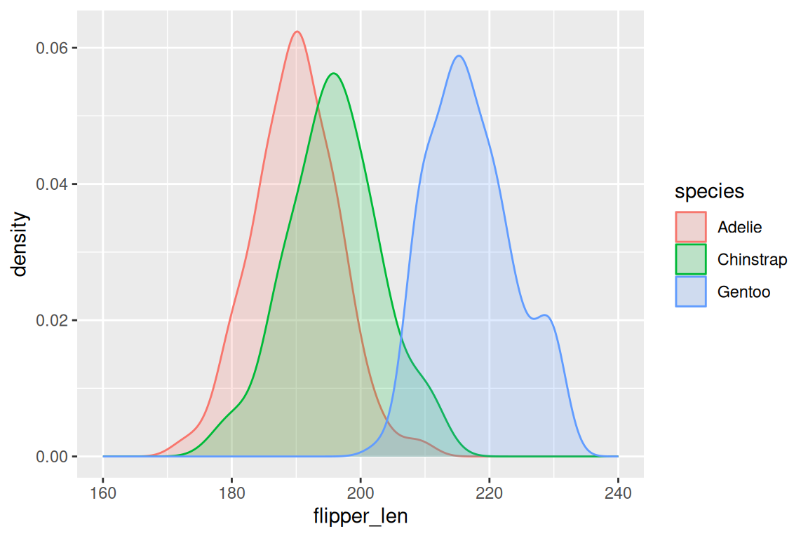
Damit bei den Verteilungen nach Spezies die einzelnen Kurven gut sichtbar sind, erhöhen wir die Transparenz der Füllfarbe mit dem Argument alpha = .... Dieses Argument akzepiert Werte zwischen 0 (volle Transparenz) und 1 (keine Transparenz). Um die Density-Kurven über die ganze Verteilung anzuzeigen, setzen wir außerdem mit xlim() die Begrenzungen der x-Achse manuell. Dies greift bereits vor auf das Scales-Layer (siehe Kapitel 6.7).
Ausreißer lassen sich wiederum mit Boxplots gut visualisieren. Ein Boxplot zeigt gleichzeitig Median und den Interquartilsabstand zwischen 1. und 3. Quartil (Box). Die Antennen (Whiskers) sind maximal beschränkt auf das 1.5-fache des IQRs, während Ausreißer als einzelne Punkte dargestellte werden (für weitere Details, siehe den Wikipedia-Artikel zu Boxplots). In ggplot werden Boxplots mit geom_box() erstellt:
ggplot(
data = penguins,
mapping = aes(y = flipper_len, x = species, color = species)
) +
geom_boxplot()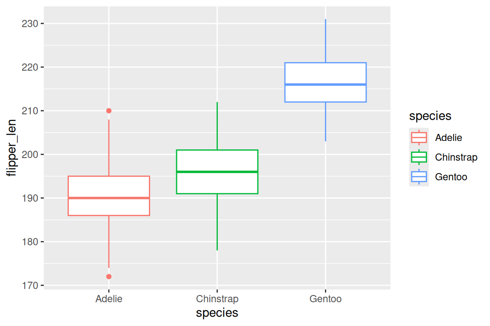
6.5.5 Kombination mehrerer Geoms
Um unterschiedliche Aspekte von Daten in einem Plot darzustellen, können wir mehrere Geoms miteinander kombinieren. Wollen wir etwa in unser Streudiagramm zum Zusammenhang von Flügel- und Schnabellänge nach Spezies zusätzlich noch eine OLS-Regressionsgerade hinzufügen, können wir geom_point() und geom_smooth() kombinieren:
ggplot(
data = penguins,
mapping = aes(x = bill_len, y = flipper_len, color = species)
) +
geom_point(alpha = .5)+
geom_smooth(method = "lm", alpha = .2)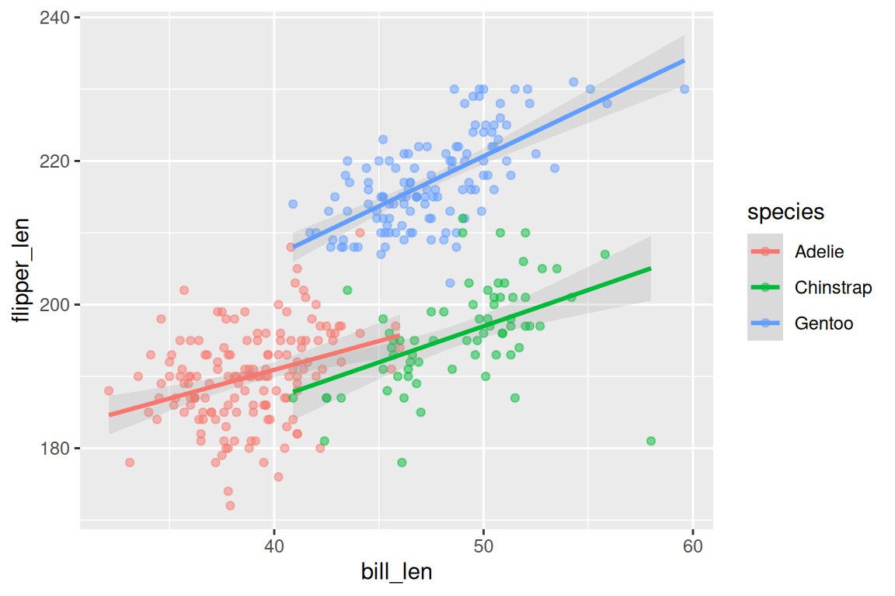
TippUnterschiedliches Ästhetik-Mapping pro Geom
Oft wollen wir nur auf ein spezifisches Geom ein Ästhetik-Mapping anwenden. Um dies zu erreichen, definieren wir dieses Argument nicht in der aes()-Funktion innerhalb von ggplot(), sondern als Argument in aes() innerhalb des gewünschten Geoms.
Möchten wir etwa die Form der einzelnen Punkte im Streudiagramm abhängig vom Geschlecht machen, jedoch nicht die Regressionsgeraden:
ggplot(
data = penguins,
mapping = aes(x = bill_len, y = flipper_len, color = species)
) +
geom_point(aes(shape = sex), alpha = .5)+
geom_smooth(method = "lm", alpha = .2)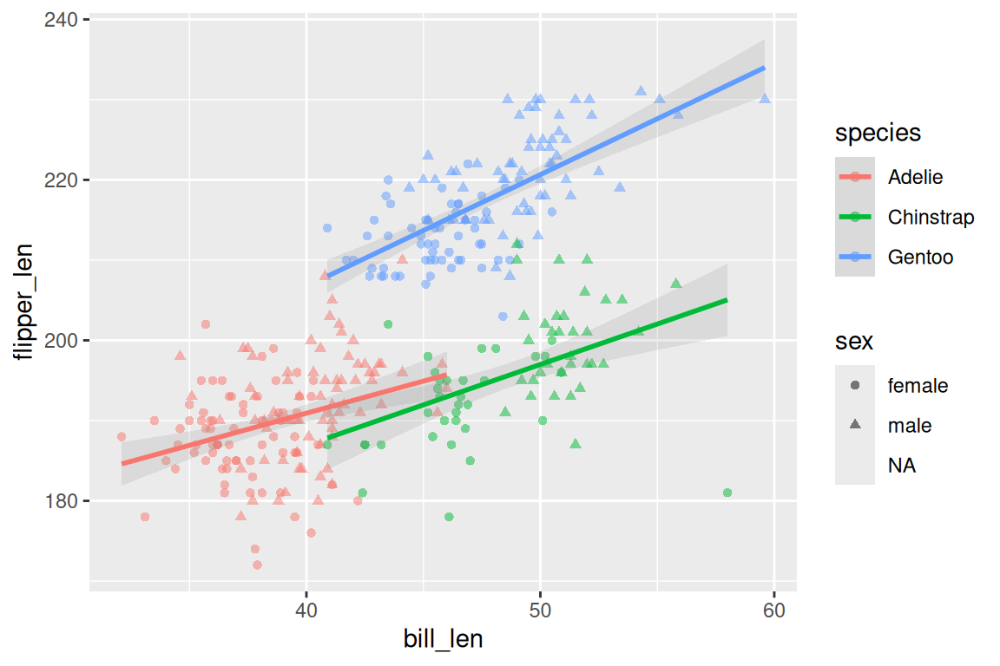
6.6 Statistics-Layer
Der Statistics-Layer dient dazu, Daten vor der grafischen Darstellung statistisch zu transformieren. stat_*-Funktionen berechnen zusätzliche Informationen wie Häufigkeiten, Dichten, Regressionslinien oder Zusammenfassungen, die anschließend visualisiert werden. Dadurch lassen sich komplexe Muster und Strukturen in den Daten effizient und automatisch darstellen, ohne dass die Berechnungen separat durchgeführt werden müssen. ggplot inkludiert mehr als 20 unterschiedliche Statistik-Funktionen.
Vielfach geschieht dies bereits im Hintergrund im Geom-Layer, da gewisse statistische Transformationen Default-Optionen einer geom_*()-Funktion sind. So ist etwa stat_count() die Default-Option in geom_bar(). Mit unseren Skills aus Kapitel 3 können wir außerdem Daten oft einfach vor einem ggplot()-Befehl selbst transformieren. Aus diesem Grund wird der Statistics-Layer in dieser R-Einführung nicht im Detail behandelt.
Um ein Beispiel für eine stat_*-Funktion zu geben, replizieren wir das Liniendiagramm aus Kapitel 6.5 mit stat_summary(). Dabei definieren wir über die Argumente fun = ... die Transformationsfunktion sowie über geom = ... die Art der Visualisierung:
ggplot(penguins, aes(x = year, y = body_mass, color = species)) +
stat_summary(fun = mean, geom = "line")